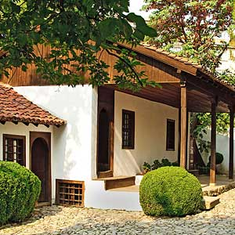
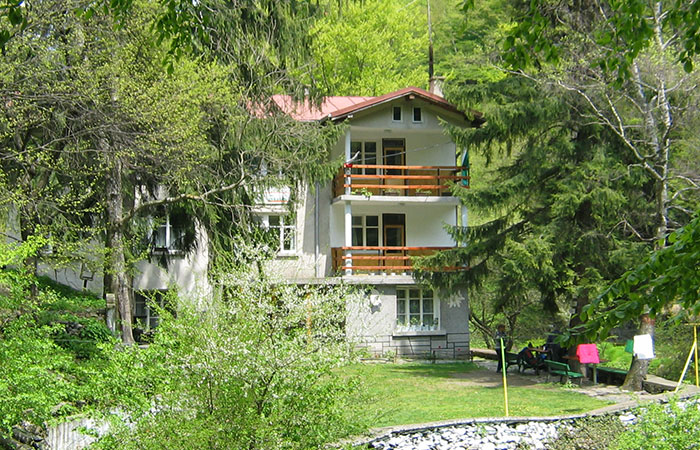
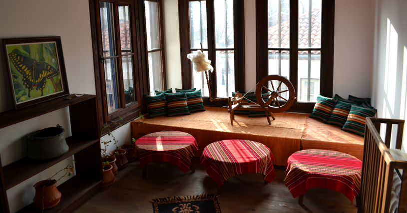
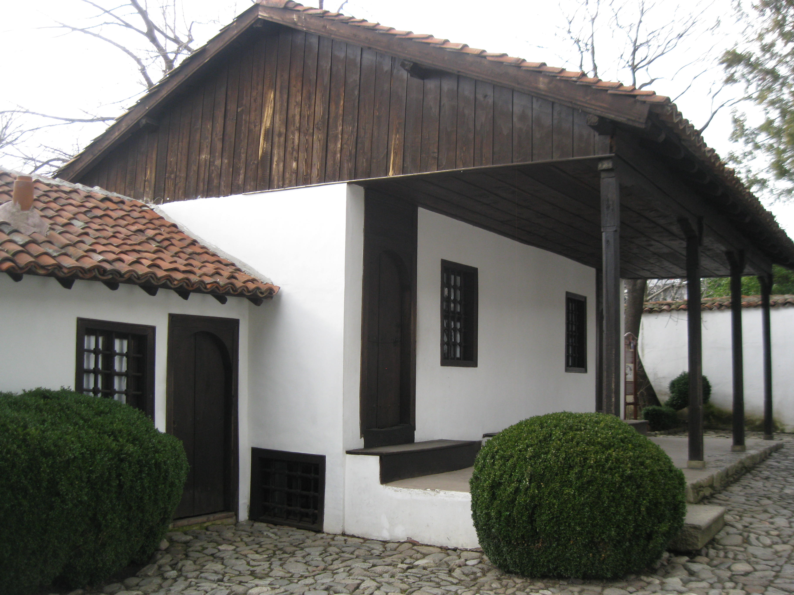

Забележителности
Национален музей „Васил Левски”

Родната къща на Апостола, построена в края на ХVІІІ век, е възстановена през 1933 г. и е отворена за посещение като музей през 1937 г.
Комплексът включва още експозиционна зала, Чардаклиевата къща, Онбашиевата къща и параклиса „Всех святих болгарских”, където се съхранява част от косите на Апостола.
Музеят е включен в „100-те национални туристически обекта”.
виж на картатаИсторически музей – Карлово

Намира се в Стария град, в една от най-представителните сгради от епохата на Възраждането-
някогашното петокласно мъжко училище, построено през 1871 г.
Музеят представя историята на града от основаването му през ХV век до наши дни.
Ккомплексът включва и открити експозиции – възстановка на розоварна от началото на XIX век,
терзийска работилница, гайтанджийска одая, тепавица и др.
Бухаловият хан
Бухаловият хан е една от емблематичните възрожденски къщи в туристическия комплекс „Старинно Карлово”.
В нея навремето се събирал революционният комитет, основан от Васил Левски.
Днес тя е реставрирана и превърната в Център за занаяти и културни традиции.
Тук посетителите могат да се докоснат до майсторството на местните дърворезбари,
ножари, гравьори, медникари, бъчвари, иконописци, да опознаят великолепието на калоферската дантела,
на тъкачеството, плетачеството, изработката на кукерски маски, да се насладят на ароматно кафе,
приготвено на пясък, да опитат сладко и локум от рози и десерти, приготвени по стари карловски рецепти.
Паметник на Васил Левски.
Основният му камък е положен на 15 май 1903 г. в присъствието на княз Фердинанд.
На пиедестала на паметника са изписани имената на загиналите през страшните юлски
и августовски дни на 1877 г. карловци, възприели веруюто на Левски :
„Нам свобода и човешки правдини трябват!”.
Църква „Свети Николай”
Паметник на възрожденската архитектура.
Сред иконописците й са Станислав Доспевски и Иван Зографски.
Тук през 1858 г. за първи път е отпразнуван денят на българската писменост.
В двора на църквата се намира гробът на Гина Кунчева – майката на Васил Левски.